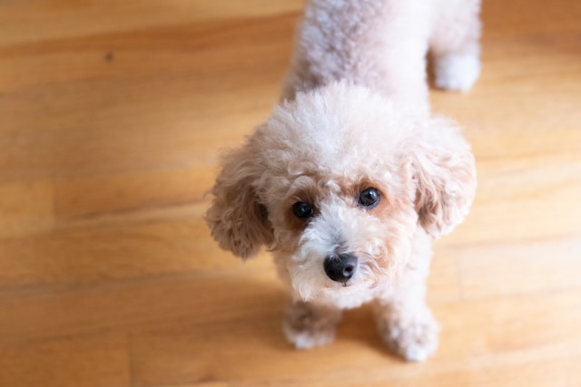
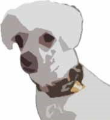

Surpeuplement sévère de la mâchoire — race toy à risque le plus élevé
Risque élevéLa mâchoire minuscule du Caniche Toy force toutes ses dents adultes dans un espace extrêmement réduit. Les dents se chevauchent et créent des zones impossibles à nettoyer à la maison.
Les petites races calcifient la plaque en tartre jusqu'à 3 fois plus vite. Sans brossage quotidien, le tartre visible se forme en quelques semaines.
Les Caniches Toy retiennent fréquemment leurs dents de lait après 6 mois, créant des rangées doubles qui piègent les bactéries.
Sans soins préventifs quotidiens, les Caniches Toy commencent souvent à perdre des dents dès l'âge de 5 à 7 ans.

"Je suis moi-même un Caniche Toy — alors je ne vais pas édulcorer la vérité. Le surpeuplement est réel, ça progresse vite, et ça ne fait pas mal de façon évidente jusqu'à ce que ce soit déjà grave. Mon propriétaire ne s'en était douté de rien jusqu'à ce que quatre de mes dents soient déjà perdues. Commencez le brossage maintenant."
Fabriqué à la main au Canada — naturel, sans xylitol ni sorbitol.
Plus facile à contrôler dans les petites bouches.
Marque canadienne — à ajouter dans le bol d'eau quotidiennement.
Marque canadienne — bâtonnets dentaires avec probiotiques.
🇨🇦 = Fabriqué ou basé au Canada · Liens vers Amazon.ca avec lien d'affilié. Divulgation.
À quelle fréquence un Caniche Toy devrait-il avoir un nettoyage dentaire?
Tous les 6 mois — pas une fois par an. Leur petite mâchoire et leur risque élevé signifient que la maladie progresse plus rapidement. Les radiographies sont essentielles.
Pourquoi les Caniches Toy ont-ils de si mauvaises dents?
Toutes les dents adultes dans une mâchoire extra-petite causent un surpeuplement sévère. La plaque se calcifie également beaucoup plus rapidement chez les petites races.
Les bâtonnets dentaires remplacent-ils le brossage?
Non. Les bâtonnets sont un complément utile mais ne remplacent pas le brossage quotidien. Pour les Caniches Toy, la combinaison brossage + bâtonnet + additif est l'approche recommandée.
Quand les dents de lait retenues doivent-elles être retirées?
Si des dents de lait sont encore présentes à 6 mois, elles doivent être extraites — idéalement lors de la stérilisation. Les dents de lait retenues sont très courantes chez les Caniches Toy.
Faites le quiz gratuit de Puffy et obtenez une routine personnalisée en 60 secondes.
⚡ Faire le quiz gratuit